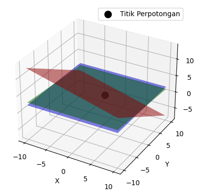

#Menggambar Persamaan Bidang Dalam Ruang 3D
#Penyelesaian persamaan Linier Selesaikan persamaan berikut: $\( 8x_1+x_2+x_3=19\\ x_1+2x_2+3x_3=9\\ 2x_1+x_2-x_3=5\ \)$
import numpy as np
A=np.array([[8,9,1,19],[1,2,3,9],[2,1,1,5]])
print(A)
[[ 8 9 1 19]
[ 1 2 3 9]
[ 2 1 1 5]]
Mendefinisikan fungsi operasi baris eleminasi Gauss#
RowSwap(Operasi penukaran baris dilakukan dengan menukar posisi dua baris dalam matriks)
RowScale(Operasi skalasi baris melibatkan mengalikan satu baris matriks dengan suatu skalar.)
RowAdd(Operasi penambahan baris dilakukan dengan menambahkan kelipatan dari satu baris matriks ke baris lainnya.)
def RowSwap(A,k,l):
# =============================================================================
# A is a NumPy array. RowSwap will return duplicate array with rows
# k and l swapped.
# =============================================================================
m = A.shape[0] # m is number of rows in A
n = A.shape[1] # n is number of columns in A
B = np.copy(A).astype('float64')
for j in range(n):
temp = B[k][j]
B[k][j] = B[l][j]
B[l][j] = temp
return B
def RowScale(A,k,scale):
# =============================================================================
# A is a NumPy array. RowScale will return duplicate array with the
# entries of row k multiplied by scale.
# =============================================================================
m = A.shape[0] # m is number of rows in A
n = A.shape[1] # n is number of columns in A
B = np.copy(A).astype('float64')
for j in range(n):
B[k][j] *= scale
return B
def RowAdd(A,k,l,scale):
# =============================================================================
# A is a numpy array. RowAdd will return duplicate array with row
# l modifed. The new values will be the old values of row l added to
# the values of row k, multiplied by scale.
# =============================================================================
m = A.shape[0] # m is number of rows in A
n = A.shape[1] # n is number of columns in A
B = np.copy(A).astype('float64')
for j in range(n):
B[l][j] += B[k][j]*scale
return B
B1 = RowSwap(A,0,2)
B2 = RowScale(A,2,0.5)
B3 = RowAdd(A,0,1,2)
print(A)
print('\n')
print(B2)
[[ 8 9 1 19]
[ 1 2 3 9]
[ 2 1 1 5]]
[[ 8. 9. 1. 19. ]
[ 1. 2. 3. 9. ]
[ 1. 0.5 0.5 2.5]]
## Tambahkan -2 kali baris 0 ke baris 1
A1 = RowAdd(A,0,1,-2)
print(A1,'\n')
## Tambahkan -4 kali baris 0 ke baris 2
A2 = RowAdd(A1,0,2,-4)
print(A2,'\n')
## Tambahkan -2 kali baris 1 ke baris 2
A3 = RowAdd(A2,1,2,-2)
print(A3,'\n')
## Kalikan baris 1 dengan 1/3
A4 = RowScale(A3,1,1.0/3)
print(A4,'\n')
## Kalikan baris 2 dengan 1/19
A5 = RowScale(A4,2,1.0/-19.)
print(A5)
[[ 8. 9. 1. 19.]
[-15. -16. 1. -29.]
[ 2. 1. 1. 5.]]
[[ 8. 9. 1. 19.]
[-15. -16. 1. -29.]
[-30. -35. -3. -71.]]
[[ 8. 9. 1. 19.]
[-15. -16. 1. -29.]
[ 0. -3. -5. -13.]]
[[ 8. 9. 1. 19. ]
[ -5. -5.33333333 0.33333333 -9.66666667]
[ 0. -3. -5. -13. ]]
[[ 8. 9. 1. 19. ]
[-5. -5.33333333 0.33333333 -9.66666667]
[-0. 0.15789474 0.26315789 0.68421053]]
import numpy as np
import matplotlib.pyplot as plt
from mpl_toolkits.mplot3d import Axes3D
# Koefisien untuk masing-masing persamaan bidang
a1, b1, c1, r1 = 1, 2, 3, 9
a2, b2, c2, r2 = 0, 1, 13, 27
a3, b3, c3, r3 = 0, 0, 1, 2
# Buat data x, y
x = np.linspace(-10, 10, 100)
y = np.linspace(-10, 10, 100)
# Buat grid x, y
X, Y = np.meshgrid(x, y)
# Hitung nilai z sesuai dengan persamaan bidang
Z1 = (r1 - a1*X - b1*Y) / c1
Z2 = (r2 - a2*X - b2*Y) / c2
Z3 = (r3 - a3*X - b3*Y) / c3
# Plot persamaan bidang dalam tiga dimensi
fig = plt.figure()
ax = fig.add_subplot(111, projection='3d')
# Plot bidang
ax.plot_surface(X, Y, Z1, alpha=0.5, rstride=100, cstride=100, color='r')
ax.plot_surface(X, Y, Z2, alpha=0.5, rstride=100, cstride=100, color='g')
ax.plot_surface(X, Y, Z3, alpha=0.5, rstride=100, cstride=100, color='b')
# Titik perpotongan
A = np.array([[a1, b1, c1], [a2, b2, c2], [a3, b3, c3]])
B = np.array([r1, r2, r3])
intersect = np.linalg.solve(A, B)
ax.scatter(intersect[0], intersect[1], intersect[2], color='black', s=100, label='Titik Perpotongan')
# Label sumbu
ax.set_xlabel('X')
ax.set_ylabel('Y')
ax.set_zlabel('Z')
# Tampilkan legenda
ax.legend()
# Tampilkan plot
plt.show()
